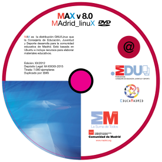

Portada
MAX 8.x
Manual de instalación, configuración y uso básico
Versión 1.2 (23/07/2015)
Si tiene acceso a internet puede consultar la versión más actualizada de este manual en la web de MAX. Al igual que los

Edita: Consejería de Educación, Juventud y Deporte de la Comunidad de Madrid. Servicio de Tecnologías de la Información y la Comunicación.
Autoría: Grupo de Desarrollo de MAX (Madrid_LinuX).
Coordinación: Javier Puche Alosete y José Quirino Vargas Ibáñez.
Colaboraciones en la documentación: Ismail Ali Gago, Ezequiel Cabrillo García, Diego Hernández Ruiz, Fernando Lisón Martín, Amadeo Mora Rioja, José Angel Navarro Piera, Javier Rodríguez Pascua, Javier Puche Alosete, Mario del Olmo Álvarez, Roberto Mengíbar Fernández, Antonio Ángel Ruiz Molino, José Miguel Sancho Espiau, Víctor Eugenio Nuño Nuño y el Departamento TIC del CRIF Las Acacias.
Basado en versiones anteriores donde también colaboraron: Joaquín Arias Buendía, Óscar Campos Ruiz-Adame, Alejandro Díaz López, Mario Izquierdo Rodríguez, Juan Leyva Delgado, Raúl Luna Lombardi, Pedro Peña Pérez, Felipe Perucho González, Eduardo Plá Vall, Carlos Salamanca Moreno, Jesús Trejo Fernández y Alberto Vinagrero Ortega.
Fotografía fondo escritorio: Ismail Alí Gago
Diseños: Ana Belén Simón Pérez basados en anteriores de Fly Factory.
 Este documento puede ser utilizado, copiado, modificado y distribuido, citando la procedencia y conforme a las condiciones descritas en la Licencia Creative Commons Reconocimiento – CompartirIgual (by-sa): Se permite el uso comercial de la obra y de las posibles obras derivadas, la distribución de las cuales se debe hacer con una licencia igual a la que regula la obra original.
Este documento puede ser utilizado, copiado, modificado y distribuido, citando la procedencia y conforme a las condiciones descritas en la Licencia Creative Commons Reconocimiento – CompartirIgual (by-sa): Se permite el uso comercial de la obra y de las posibles obras derivadas, la distribución de las cuales se debe hacer con una licencia igual a la que regula la obra original.